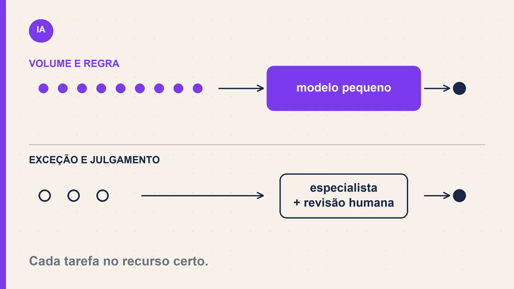
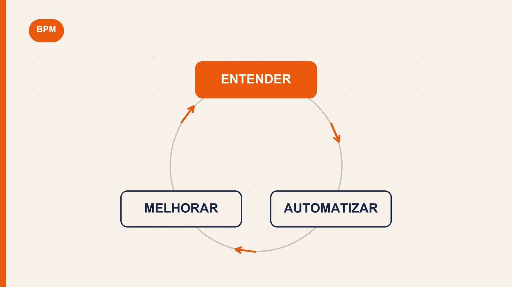
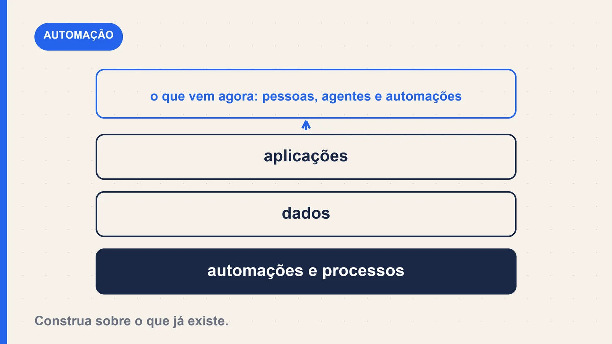

Bom dia! Boa semana pra quem trabalha com processo.
Em qualquer processo bem desenhado, quem faz o quê não é acaso: o especialista cuida da exceção, o operador treinado cuida do volume. Ninguém coloca a engenheira sênior para conferir cadastro às 8h da manhã. Com IA, o mesmo erro aparece de forma mais silenciosa: usamos o modelo mais caro e mais lento para classificar e-mail, resumir ata ou separar pedido. Esta semana a Anthropic lançou um modelo pensado justamente para o trabalho de volume, e isso reabre uma conta que quase ninguém faz: qual tarefa do seu processo merece qual recurso? Também nesta edição: a Camunda fala em ciclo de vida completo do processo, a Microsoft lembra que ninguém começa IA do zero, e você encontra 12 vagas abertas em processos e melhoria contínua, publicadas entre 1 e 8 de outubro.
IA · matéria 1
A IA pequena que assume o trabalho repetitivo do seu processo
A Anthropic lançou o Claude Haiku 5.5, modelo pequeno feito para trabalho de volume e, segundo a empresa, cerca de 75% mais barato que o anterior.

Em 7 de outubro, a Anthropic lançou o Claude Haiku 5.5, que a própria empresa descreve como o modelo pequeno mais barato, mais rápido e mais capaz que já lançou. Ele foi desenhado para tarefas de alto volume e sensíveis a custo: resumos, consultas a banco de dados e classificação de solicitações. A Anthropic também o indica para atendimento ao vivo e uso de navegador, onde a velocidade pesa, e como subagente ao lado do Opus 5.5 e do Sonnet 5.5 em trabalho de código.
Segundo a Anthropic, ele custa em média cerca de 75% menos que o Haiku 4.5, o modelo pequeno anterior.
Fonte: Anthropic · 7 de outubro de 2026
BPM · matéria 2
A Camunda diz que processo é um ciclo: entender, automatizar, melhorar
A Camunda defende que processo é um ciclo: entender o trabalho, automatizar e continuar melhorando.

Em post de 6 de outubro, a Camunda defende o que chama de ProcessOS: um sistema que apoia o ciclo de vida completo de um processo, ou seja, entende o trabalho, o automatiza e continua melhorando conforme as condições mudam. O texto trata do ecossistema de parceiros e diz que entregar essa visão em escala exige colaboração com cada cliente, e que os parceiros trazem experiência especializada.
Fonte: Camunda · 6 de outubro de 2026
AUTOMAÇÃO · matéria 3
Sua transformação com IA começa pelo que você já construiu
A Microsoft lembra que a maioria das empresas não começa a transformação com IA do zero.

Em 1º de outubro, Tiffany Treacy, vice-presidente de produto do Power Platform, publicou que a próxima geração de aplicações de negócio vai juntar pessoas, agentes, apps e automações para entender objetivos, decidir e agir. O ponto central do texto, ligado à conferência PPCC 2026, é que a maioria das organizações não começa a transformação com IA do zero: já tem aplicações, dados, automações e processos dos quais as pessoas dependem todos os dias, e a oportunidade é construir sobre isso.
Fonte de fornecedor: leia como visão de mercado. A Microsoft também abriu inscrições para o Ignite, de 17 a 20 de novembro.
Fonte: Microsoft Power Platform Blog · 1 de outubro de 2026
Radar
Você precisa saber
- IA
em 6 de outubro, a Anthropic anunciou uma versão ampliada do Cyber Verification Program, que oferece capacidades avançadas de segurança, com menos bloqueios automáticos, a profissionais de segurança qualificados. Leia
- Lean
o Lean Enterprise Institute abre em 6 de novembro o curso online, conduzido por coach, "Managing on Purpose with Hoshin Kanri", sobre desdobramento de metas. Leia
- Lean administrativo
a simulação "InBox Lean Office Kaizen" acontece em 28 de outubro, em Rochester (EUA), com foco em Lean aplicado a trabalho de escritório. Leia
- Eventos
o 2027 Lean Summit está marcado para 16 e 17 de março de 2027. Leia
- Tecnologia
o Microsoft Ignite 2026 acontece de 17 a 20 de novembro, com inscrições abertas. Leia
Aplique na segunda-feira · Na prática
Separe o volume do julgamento
Problema que resolve: a equipe usa (ou quer usar) IA em tudo, sem distinguir o que é repetitivo e baseado em regra do que exige decisão humana.
Passo a passo
- Liste 5 tarefas do seu processo que se repetem toda semana (ex.: classificar solicitações, resumir atendimentos, conferir cadastro, responder dúvidas comuns, separar documentos).
- Marque cada uma como "volume e regra" (sempre igual, critério claro) ou "exceção e julgamento" (depende de contexto, risco ou relacionamento).
- Escolha UMA tarefa de volume e rode um piloto de uma semana sobre 30 itens: compare o resultado da IA com a classificação de uma pessoa e registre a taxa de acerto e o tempo gasto.
- Defina o checkpoint humano: quem revisa uma amostra, com que frequência e o que acontece quando o erro passa de um limite combinado.
- Ferramenta ou template
- planilha com 5 colunas: Tarefa / Volume por semana / Tipo (volume ou julgamento) / Taxa de acerto no piloto / Responsável pela revisão.
- Duração estimada
- 40 minutos para listar e classificar; uma semana para o piloto.
- Resultado esperado
- uma tarefa repetitiva sai da mão do time com critério de qualidade e responsável nomeado, e as de julgamento ficam protegidas.
Pausa para pensar
Cenário da semana
O cenário: sua equipe vai usar IA para classificar cerca de 500 solicitações por semana por categoria e prioridade. O custo por item é baixo e a demonstração do fornecedor foi ótima.
A pergunta: o que você faria primeiro?
A) Ligar em todas as solicitações já na segunda e ajustar conforme os problemas aparecerem.
Responder AB) Rodar em uma amostra de 30 itens, comparar com a classificação humana e só então decidir o que automatizar.
Responder BC) Pedir ao fornecedor um documento de garantia de acerto e seguir o que ele recomendar.
Responder C
Clique em A, B ou C: abre um e-mail já pronto para registrarmos sua resposta. Sua resposta pode aparecer, sem identificação, na próxima edição.
Ferramenta da semana
bpmn.io (editor BPMN no navegador)
O que é: editor gratuito, que roda no navegador, para desenhar diagramas BPMN, sem instalar nada. É a mesma família de tecnologia usada por ferramentas de mercado como a Camunda.
- Problema que resolve
- processo desenhado em slide ou quadro solto, que só quem desenhou consegue interpretar.
- Melhor uso
- mapear um processo AS IS em reunião com o time e exportar o arquivo para revisar depois.
- Limitação
- só desenha e documenta: não executa nem monitora o processo, e o trabalho em equipe exige compartilhar o arquivo manualmente.
- Exemplo prático
- um analista desenha o fluxo de aprovação de compras, marca as decisões sem critério escrito e leva o diagrama para validar com quem executa.
Publicidade · Curso Mapeando na Prática
Domine a modelagem de processos com BPMN
Aprenda a estruturar operações claras, padronizadas e eficientes, sem depender de sistema e sem teoria solta. Do processo confuso ao fluxo que gera controle e melhoria contínua.
Quero dominar BPMN na prática →Aprenda sem pagar
Cursos gratuitos para a sua semana
Quatro portas de entrada para estudar sem gastar: uma de IA, uma de BPMN, uma de gestão de processos e uma de automação.
- IA
Anthropic Academy
Cursos gratuitos e com certificado sobre Claude, Claude Code e agentes, com cadastro só por e-mail. Comece por "Claude 101" ou "Claude Code 101".
Ver cursos → - BPMN
Camunda Academy
Treinamento gratuito sob demanda em BPMN e DMN, com módulos como "BPMN Participants", "BPMN Events" e "BPMN Task Types".
Ver cursos → - PROCESSOS
Escola Virtual.Gov (Enap)
Centenas de cursos gratuitos com certificado, incluindo trilhas de gestão de processos. Busque por "gestão de processos".
Ver cursos → - AUTOMAÇÃO
Microsoft Learn
Trilhas gratuitas de Power Platform, Power Automate e IA para quem quer automatizar rotinas de escritório.
Ver trilhas →
Gratuidade e condições são definidas por cada instituição e podem mudar.
Carreira
Oportunidades em Processos
Vagas publicadas nos últimos dias no portal da Gupy (data conforme exibida no portal).
- Analista de Processos IIINatto · Recife - PE · Presencial · publicada em 08/10/2026Ver vaga →
- Coordenador(a) de Melhoria Contínua – Processos LogísticosKuehne+Nagel Brasil · Nova Santa Rita - RS · Presencial · publicada em 08/10/2026Ver vaga →
- Analista de Logística II – Melhoria ContínuaGrupo Boticário · São José dos Pinhais - PR · Híbrido · publicada em 08/10/2026Ver vaga →
- Analista de Processos e Gestão III – CCLGOL Linhas Aéreas · São Paulo - SP · Híbrido · publicada em 07/10/2026Ver vaga →
- Analista de ProcessosItix · Remoto · Pessoa Jurídica · publicada em 07/10/2026Ver vaga →
- Analista de Processos JrStefanini Group · Remoto · Efetivo · publicada em 07/10/2026Ver vaga →
- Analista de Processos SR [EPP]Minerva Foods · Campinas - SP · Presencial · publicada em 07/10/2026Ver vaga →
- Analista de Processos PLGrupo Vamos · São Paulo - SP · Presencial · publicada em 07/10/2026Ver vaga →
- Analista de Melhoria Contínua Jr (CX)Certisign · São Paulo - SP · Híbrido · publicada em 05/10/2026Ver vaga →
- Analista Governança Sr – Qualidade e Melhoria Contínua de Serviços de TIVivo Vita · Rio de Janeiro - RJ · Híbrido · publicada em 05/10/2026Ver vaga →
- Coordenador de Melhoria ContínuaViveo · São Paulo - SP · Híbrido · publicada em 02/10/2026Ver vaga →
- Analista de Melhoria ContínuaIBASA · Porto Alegre - RS · Presencial · publicada em 01/10/2026Ver vaga →
As vagas podem ser encerradas ou alteradas pelas empresas a qualquer momento.
Para guardar
Conteúdo para salvar
- ArtigoIntroducing Claude Haiku 5.5 — vale a leitura das seções de desempenho e preço para quem quer calcular o custo por tarefa.
- ArtigoThe Great Process Re-Engineering Has Begun (Camunda, maio de 2026) — contexto de mercado para a discussão de processo e IA desta edição, lido como visão de fornecedor.
- Ferramenta gratuitaPortal de vagas da Gupy — pesquisa direta por termos como "analista de processos" e "melhoria contínua", com data de publicação em cada vaga.
Sua vez
Pergunta do leitor
Qual tarefa repetitiva do seu processo ainda é feita com o recurso mais caro (ou mais lento) que você tem, só porque sempre foi assim?
Responda este e-mail — sua resposta pode aparecer, sem identificação, na próxima edição.
Até a próxima
Se algo aqui foi útil, o maior favor é responder com sua opinião ou encaminhar para alguém que vive tentando descobrir qual tarefa merece qual recurso. E se tem um tema, uma ferramenta ou um tipo de vaga que você quer ver por aqui, é só contar.
O que você gostaria de ver aqui? →
Quero aprender Claude Code na prática? Conhecer o curso.
Alan Almeida
Invicta · Mapeando na Prática